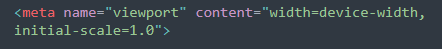

뷰포트란 현재 화면에 보여지고 있는 영역을 의미한다
기기 별로 뷰포트가 다르기 때문에,
동일한 웹 페이지라도 기기에 따른 배율 조정이 발생해 화면의 크기가 다르게 보이는 현상이 나타난다.
(Ex:핸드폰과 컴퓨터로 HTMl문서를 열었을때 크기차이)
이러한 현상이 일어나는 이유는 태블릿,스마트폰 등 모바일 기기가 등장하기 전에는 웹 페이지가
컴퓨터 화면만을 위해 설계됨. 그래서 컴퓨터 화면에서는 웹브라우저 라는 소프트웨어를 통해
페이지 크기를 조절해가며 웹을 조회할 수 있지만, 모바일 기기에서는 고정된
사이즈로 조회해야 해서 웹의 모든 콘텐츠를 표시하기 위해서 배율 조정을 해야함
기기 별로 뷰포트가 다르기 때문에 발생하는 배율 문제에
대응하기 위해 meta태그를 통해 뷰포트 관련 설정을 추가할 수 있다.
-width=device-width : 페이지의 너비를 기기의 스크린 너비로 설정합니다 .
즉 렌더링 영역을 기기의 뷰포트의 크기와 같게 만들어줌
-initial-scale=1.0 : 처음 페이지 로딩시 확대/축소가 되지 않은 원래 크기를 사용하도록 함 .
0~10사이의 값을 가짐
Ex

뷰포트의 너비를 단말기 너비에 맞추고,초기 배율을 1로한다
(가장 일반적으로 사용함)
이것 외에도
-minimum-scale : 줄일 수 있는 최소 크기를 지정. 0~10 사이의 값을 가짐
-maximum-scale : 늘릴 수 있는 최대 크기를 지정. 0~10 사이의 값을 가짐
-user-scalable : yes 또는 no 값을 가지며 사용자가 화면을 확대/축소 할 수 있는지는 지정
위에 줌 레벨은 1이 원래 크기이고, 0.5라면 50% 축소를 뜻함